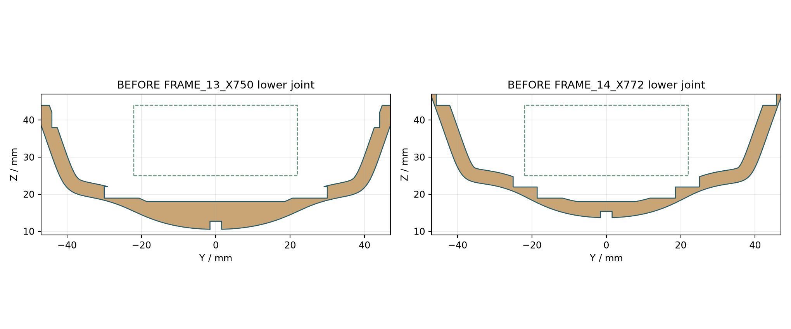
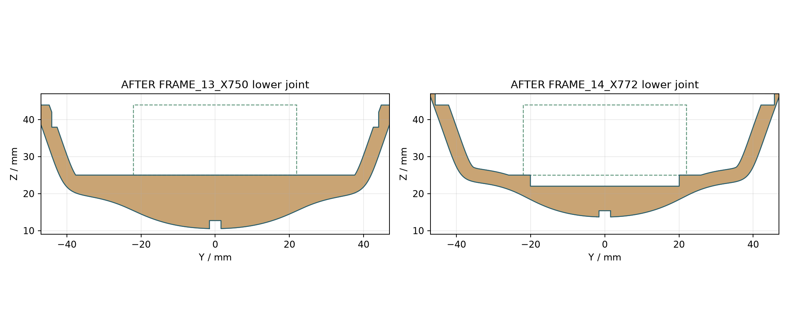
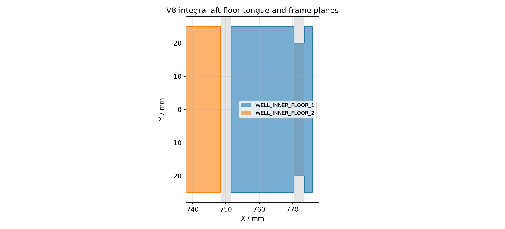

# 076 V8 艉部接头评审 V8已完成本轮几何修订，可用于复核。仍为D模型设计，不能用于直接切割或下水；原生Rhino桌面、板材承压、胶接密封、硬件适配均未验证。 ## 改动与保留 X750、X772肋骨的旧下横板槽和旧坞舱底板槽改为连续下腹板；Z18以下保留原龙骨接口。下横板及坞舱底板各分成两段，每片3mm厚，距X750肋骨端面各留0.06mm工艺缝。末段底板以40mm宽的整体舌部穿过X772肋骨的接收口，口宽40.12mm、下承面Z22、上沿Z25.06。下横板终止于X770.44，取消原本1.44mm短尾片；底板艉帽与前方舌部是一体切割件，取消独立2.44mm帽片。分段是对早期连续板方案的D模型设计修订。原固定左右坞舱侧壁仍连续贯穿X610～776，Y±22～25，Z25～44；底板顶面与侧壁底面胶接，下横板顶面与底板底面胶接。接触面积见aft_validation.json，不能把面积或轮廓连通解释成强度。 外形母面53个对象与冻结V6几何编码逐一相同；800mm总长和44×19mm坞舱净宽/净高保留，净区X610～776、Y−22～22、Z25～44。新增木件对该开区间无正体积侵入。两肋骨上部的四片侧贴板随修边轮廓调整，已纳入原生和蒙皮检查；照明固定/可退出支段沿用V7拆分方案，与V6整条WIRE_LIGHT不同，完整差异见change_record.json。此前V7为未交付草稿，薄桥约0.558/1.128/1.064mm；V8修订下槽底边到外/底木边的实际最短距离为7.762552 / 3.196954mm，完整最短线段处于保存木轮廓内。这只关闭该处亚毫米几何问题，不推断可施加压力。 ## 当前文件的检查证据 - 4个3dm实际保存回读；装配模型290个有效原生对象、0 Mesh、毫米、5个命名视图。10个修改板件的保存原生挤出轮廓与panel_details.json逐坐标误差0。 - 静态实体175组包围盒候选逐对Manifold相交，无板件正体积冲突；原有舰岛装饰重叠单独记录。甲板和机库130mm连续保守扫掠均无冲突；原机库座和双舵122位置检查通过。 - 对10个改动板件共2622个边缘点进行保存原生艉部Brep曲面的有界最近点优化；边界间距≤3mm，板厚取底/中/顶三层。最小蒙皮距离2.199920mm，按2.2mm设计余量和0.01mm数值容差检查通过。这是离散几何检查，不是连续全局证明；未扩展为全船蒙皮放行。 - 原始输入哈希检查通过。当前原生文件SHA-256在native_hashes.json；证据aft_validation.json绑定装配模型哈希。    ## 装配顺序与尚未关闭的事项 1. 先使用同批3mm板做槽宽、胶缝、木纹方向和压贴短段试件。结构板木种/等级与木纹未指定；2×5mm椴木蒙皮和0.2mm胶余量是模型设计输入。 2. 在工装上定位主龙骨与肋骨，保留原龙骨插合位置；新腹板不得强行压入旧的整块底板。夹具、允差和插接力未验证。 3. 从开放上方分别放入两段下横板、两段底板，将末段底板的40mm整体舌部落在X772肋骨Z22的开口承面，再装连续侧壁，校核Z25齐平。舌部与肋骨实际水平接触120mm²，侧缝各0.06mm，底部名义承面无缝。X750分段处由肋骨腹板补足结构位置，缝侧需胶接封闭；具体胶种、胶脚与施工顺序须试件验证。原侧壁/底板接触形成几何上的连续纵向连接，承载未知。 4. 不再存在独立1.44mm下横板尾片或2.44mm底板帽。末段底板通过40mm整体舌部连接前后，端部外侧短耳与该舌部同属一片板，不能拆成小片制作。舌部肩角、木纹与胶接质量仍须物理压贴和装配试件验证。 5. 该分段装配顺序属于可见开放空间的装配提案；完整下部板件插入/夹具扫掠NOT_CHECKED。现有机库/甲板检修扫掠已复核，不能替代艉部装配路径试验。 6. 对0.06mm侧缝做胶接、固化后密封及浸水测试，记录泄漏/开裂/变形；本版没有宣称水密或材料强度。硬件选型、轴系联轴、舵机/密封仍为待决。 ## 文件与复现 原生装配076_assembled_v8.3dm；另有骨架、爆炸和工装版。assembly_scene.json保持原groups/parts/rotors/steering接口，分段名称映射见part_name_mapping.json；10件零件号/材料/板厚/木纹/装配状态见part_material_records.json。图片从保存的切割轮廓绘制，不冒充Rhino桌面截图。 运行source/build_service.py、source/verify_service.py、source/verify_aft.py、source/write_report.py、source/make_viewer.py。Python依赖见requirements.txt。所有输出只在V8目录生成，V6/V7和历史原生文件不覆盖。离线HTML仍沿用现有操作实现；网站状态适配和浏览器测试由主任务集成，不在本几何审查中宣称通过。


